InstalacjaInstalling
- Na telefonie dotknij Pobierz APK.On the phone, tap Download APK.
- Otwórz pobrany plik. Android zapyta o zgodę na instalację z przeglądarki: zezwól (tylko raz).Open the downloaded file. Android asks to allow installs from the browser: allow it (once).
- Uruchom „f650gs.pl” i zaloguj się swoim kontem forum. Nowszą wersję instalujesz tak samo, ustawienia i logowanie zostają.Open "f650gs.pl" and sign in with your forum account. A newer version installs the same way and keeps your settings and login.
Jak dodać zdjęcia do wpisuHow to add photos to a post
- W odpowiedzi, nowym temacie albo wiadomości ustaw kursor tam, gdzie ma być zdjęcie, i stuknij 📷 Dodaj zdjęcie (w odpowiedzi: przycisk 📷 obok pola tekstu).In a reply, new topic or message, put the cursor where the photo should go and tap 📷 Dodaj zdjęcie (in a reply: the 📷 button next to the text box).
- Zaznacz do 10 zdjęć i stuknij Gotowe.Pick up to 10 photos and tap Gotowe (Done).
- Tylko za pierwszym razem: Google zapyta o konto i zgodę na dodawanie zdjęć do Twoich Zdjęć Google. Wybierz konto, które podałeś xelowi, i zgódź się.First time only: Google asks for an account and permission to add photos to your Google Photos. Choose the account you gave xel and allow it.
- Zdjęcia pojawiają się w tekście jako miniatury (⏳, póki się wysyłają). Przesuwasz i kasujesz je jak litery, a tekst piszesz dalej pod nimi.The photos appear in the text as thumbnails (⏳ while uploading). Move and delete them like letters, and keep writing below them.
- Tylko za pierwszym razem: okno „Jeszcze jeden krok, tylko raz”. Stuknij Otwórz album, w Zdjęciach Google Udostępnij → Utwórz link → Kopiuj link i wróć do aplikacji. Sama weźmie link ze schowka.First time only: the "Jeszcze jeden krok, tylko raz" window. Tap Otwórz album, then in Google Photos Share → Create link → Copy link, and go back to the app. It picks the link up from the clipboard.
- Wyślij wpis jak zwykle. Zdjęcia idą w pełnej rozdzielczości do albumu „f650gs.pl zdjęcia” w Twoich Zdjęciach Google, a we wpisie widać je w 1600 px.Send the post as usual. The photos go at full resolution to the "f650gs.pl zdjęcia" album in your Google Photos, and the post shows them at 1600 px.
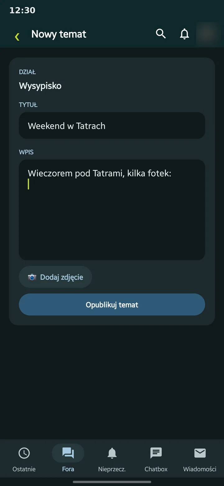
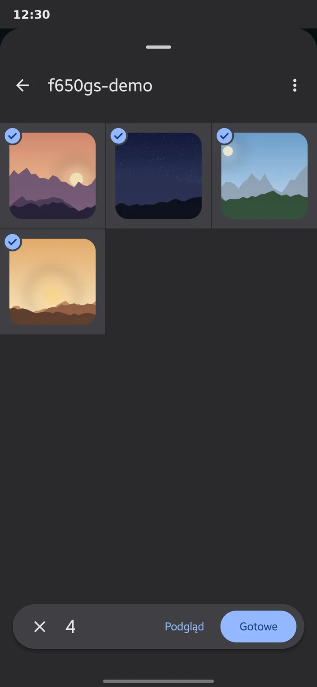
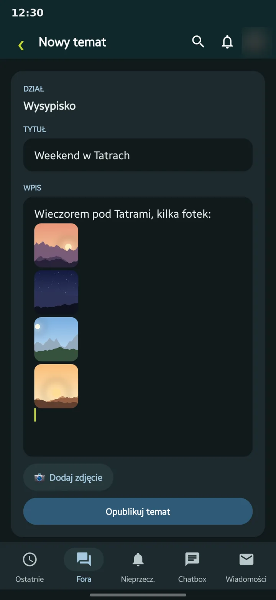
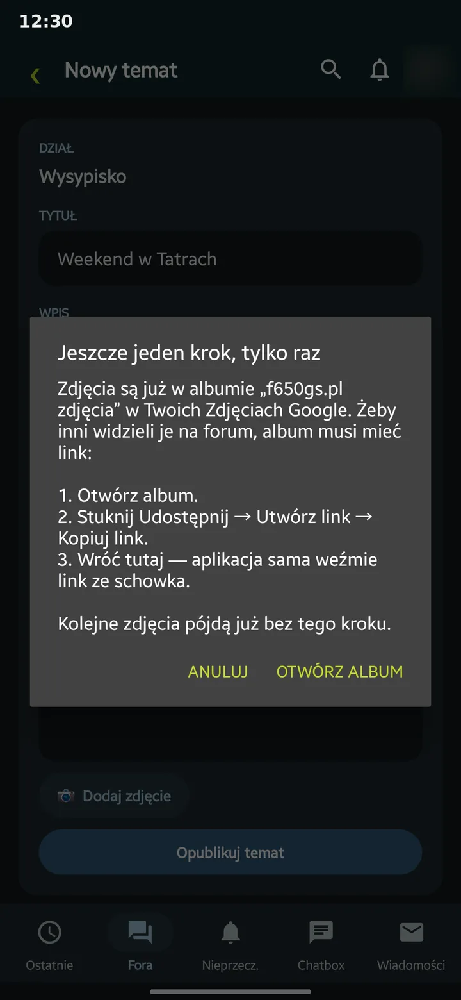
Od lewej: kroki 1, 2, 4 i 5. Zdjęcia na zrzutach są przykładowe.From the left: steps 1, 2, 4 and 5. The photos in the screenshots are samples.
Czy bezpiecznie dać aplikacji dostęp do konta Google?Is it safe to give the app access to my Google account?
Tak. Aplikacja robi to samo, co dotąd robiliście na forum ręcznie: zdjęcie trafia do Twoich Zdjęć Google, album jest udostępniony linkiem, a adres zdjęcia wchodzi do wpisu jako obrazek. Nic ponadto. Yes. The app does what members have done by hand so far: the photo goes to your Google Photos, the album is shared by link, and the photo's address goes into the post as an image. Nothing more.
Co aplikacja robiWhat the app does
- Prosi Google o jedno uprawnienie: „dodawanie do Zdjęć Google” (
photoslibrary.appendonly). Według Google pozwala ono tylko wysyłać nowe zdjęcia i tworzyć albumy, a nowe zdjęcia mogą trafić wyłącznie do Twojej biblioteki i do albumu utworzonego przez aplikację.It asks Google for one permission: "add to Google Photos" (photoslibrary.appendonly). According to Google it only allows uploading new photos and creating albums, and new photos can only go to your library and to the album the app created. - Tworzy jeden album „f650gs.pl zdjęcia” i dodaje do niego tylko zdjęcia, które sam wybierzesz.It creates one album, "f650gs.pl zdjęcia", and adds only the photos you pick.
- Album udostępniasz linkiem Ty, raz (od 2025 roku Google nie pozwala na to aplikacjom).You share the album by link, once (since 2025 Google no longer lets apps do this).
- Aplikacja czyta publiczną stronę albumu, tę samą, którą pokazuje przeglądarka, znajduje na niej Twoje zdjęcie i wstawia jego adres do wpisu.The app reads the album's public page, the same one a browser shows, finds your photo there and puts its address into the post.
Czego aplikacja nie możeWhat the app cannot do
- Zobaczyć, zmienić ani usunąć Twoich innych zdjęć i albumów.See, change or delete your other photos and albums.
- Dostać się do Gmaila, Dysku, kontaktów ani innych danych konta Google.Get into Gmail, Drive, contacts or any other Google account data.
- Poznać Twojego hasła do Google: logujesz się w okienku Google, nie aplikacji.Learn your Google password: you sign in in Google's own window, not the app's.
- Wysyłać czegokolwiek gdzie indziej niż na f650gs.pl i do Google. Raz dziennie pobiera też z tej strony mały plik
version.json, żeby sprawdzić, czy jest nowa wersja; niczego tam nie wysyła. Klucza dostępu od Google nie zapisuje, używa go tylko podczas wysyłania.Send anything anywhere other than f650gs.pl and Google. Once a day it also fetches a smallversion.jsonfile from this page to see whether there is a new version; it sends nothing there. It does not store Google's access key, it only uses it while uploading.
Jak cofnąć dostęp: w koncie Google otwórz myaccount.google.com/connections, wybierz aplikację i stuknij „Usuń dostęp”. Zdjęcia już dodane zostają w Twoim albumie. How to revoke access: in your Google account open myaccount.google.com/connections, choose the app and tap "Remove access". Photos already added stay in your album.
Sprawdź sam: kod jest otwarty, cała obsługa zdjęć jest w plikach Photos.kt, GooglePhotosApi.kt i SharedAlbumPage.kt w repozytorium.Check for yourself: the code is open, all of the photo handling is in Photos.kt, GooglePhotosApi.kt and SharedAlbumPage.kt in the repository.
W czym aplikacja jest lepsza od forum w przeglądarceWhat the app does better than the forum in a browser
Teksty i zdjęcia innych użytkowników na zrzutach są rozmyte; ekran tematu pokazuje przykładowy wpis.Other members' text and photos are blurred in the screenshots; the topic screen shows a sample post.
Jedna karta na temat, od razu przy pierwszym nieprzeczytanymOne card per topic, opening at the first unread post
Zamiast listy, w której ten sam wątek pojawia się pięć razy, każdy temat to jedna karta z liczbą nowych wpisów i ich autorami. Dotknięcie otwiera temat w miejscu, gdzie skończyłeś czytać. Instead of a list where one thread shows up five times, each topic is one card with the number of new posts and their authors. Tapping it opens the topic where you stopped reading.
Listy pokazują się od razu z ostatniej kopii, a świeże wpisy doczytują się w tle.Lists appear at once from the last copy while fresh posts load in the background.
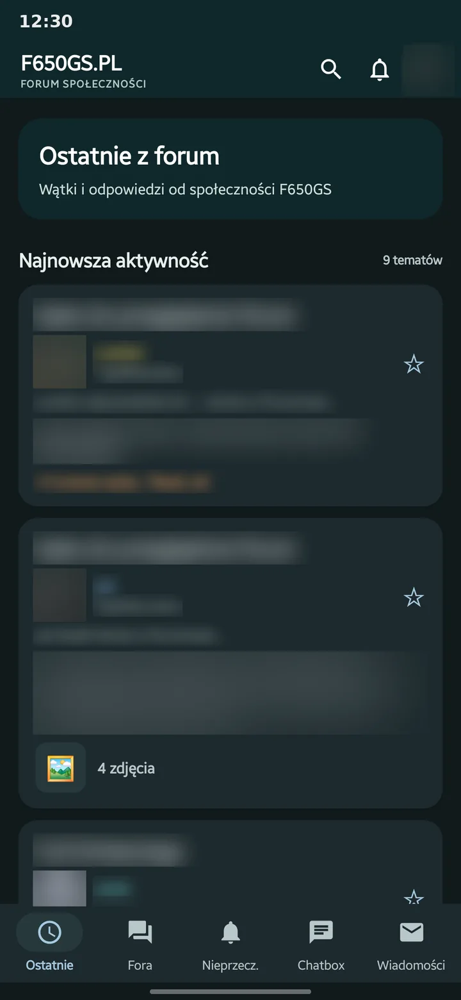
Zdjęcia na całą szerokość, a w podglądzie przewijasz jak w galeriiFull-width photos, browsed like a gallery
Zdjęcia we wpisach wypełniają ekran. Dotknięcie otwiera podgląd z przybliżaniem; przesunięcie palcem w bok pokazuje następne albo poprzednie zdjęcie z tego wpisu („Zdjęcie 2 z 4”), a przycisk pobierania zapisuje oryginał w galerii telefonu. Photos in posts fill the screen. Tap one for a zoomable preview; swipe sideways for the next or previous photo of that post ("Zdjęcie 2 z 4"), and the download button saves the original to the phone's gallery.
Wrzucanie: zaznaczasz do 10 zdjęć w galerii i aplikacja sama je wysyła w pełnej rozdzielczości, w miejsce kursora w tekście. W przeglądarce każde trzeba osobno wrzucić na zewnętrzny serwer i wkleić link. Posting: pick up to 10 photos in the gallery and the app uploads them at full resolution, right where the cursor is. In a browser each one has to go to an outside host and its link pasted by hand.
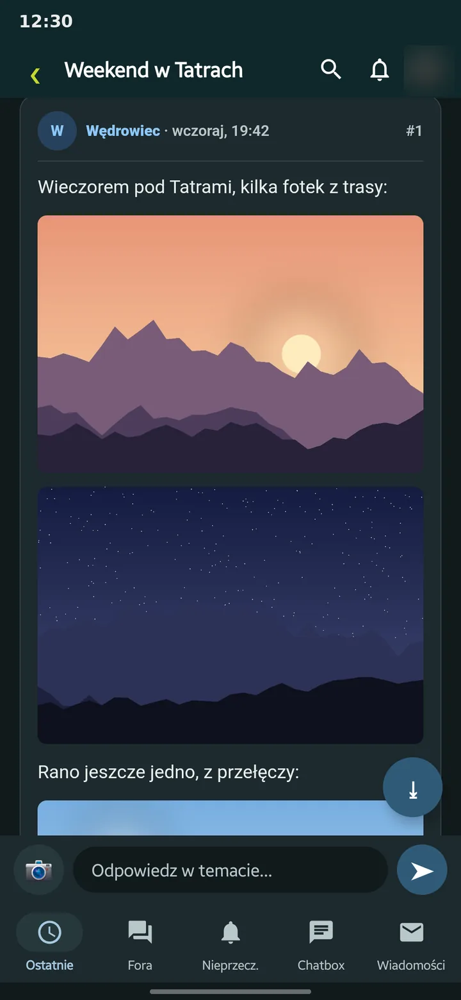
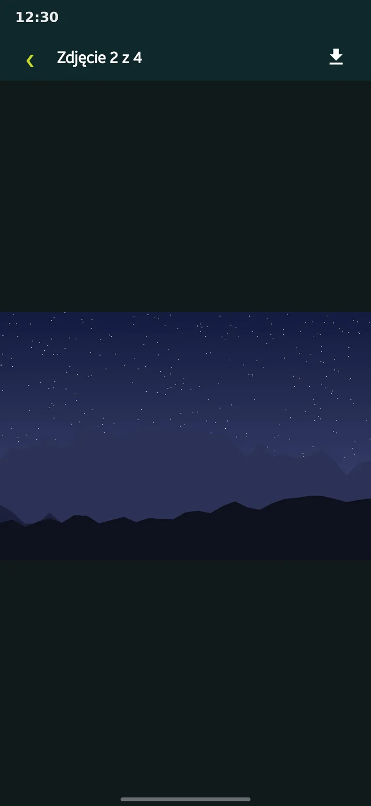
Dzwonek na górze i powiadomienia na telefonieA bell up top and notifications on the phone
Cytaty, wzmianki i reakcje na Twoje wpisy w jednym miejscu, z czerwonym licznikiem. Aplikacja sama sprawdza forum w tle i daje znać o nowych wiadomościach i powiadomieniach, także gdy jest zamknięta. Quotes, mentions and reactions to your posts in one place, with a red counter. The app checks the forum in the background and tells you about new messages and notifications, even when it is closed.
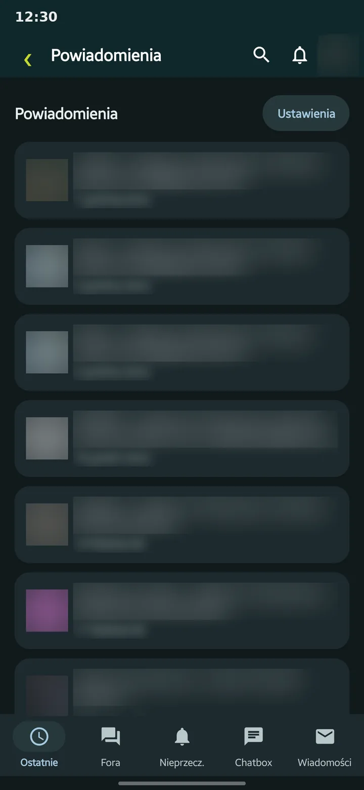
Chatbox jak w komunikatorzeThe Chatbox like a messenger
Dymki, emotki, starsze wiadomości po przewinięciu i pole do pisania przypięte na dole. Odświeża się sam. Tapatalk Chatboksa w ogóle nie obsługuje. Bubbles, emoticons, older messages on scroll and the input pinned at the bottom. It refreshes by itself. Tapatalk does not support the Chatbox at all.
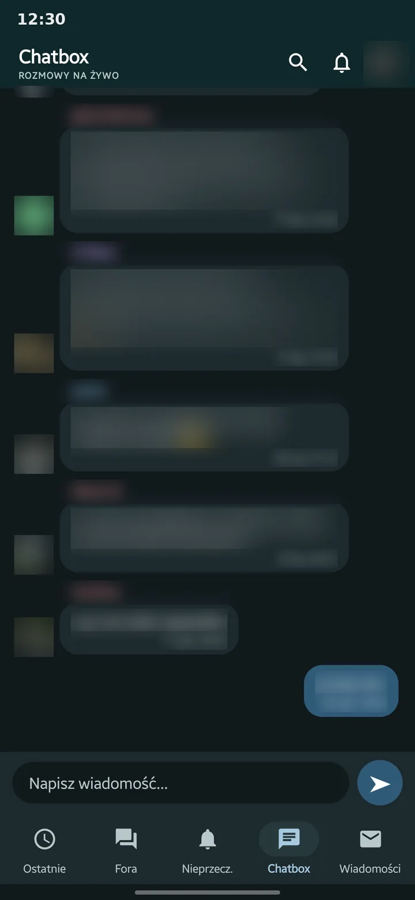
Wszystko w aplikacji, także ustawienia kontaEverything in the app, account settings too
Ustawienia powiadomień, zmiana hasła i e-maila, ignorowani użytkownicy czy rejestracja to normalne ekrany Androida z przełącznikami, a nie pomniejszona strona forum. Przy wpisywaniu nazwy aplikacja podpowiada użytkowników, więc literówka nie jest problemem. Notification settings, password and e-mail changes, ignored members and sign-up are normal Android screens with switches, not a shrunken forum page. When you type a name, the app suggests members, so a typo is no problem.
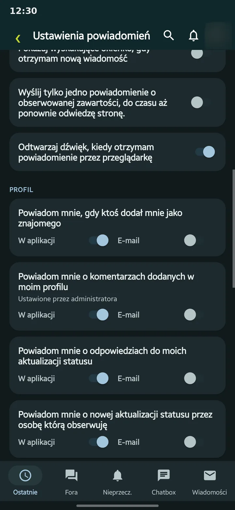
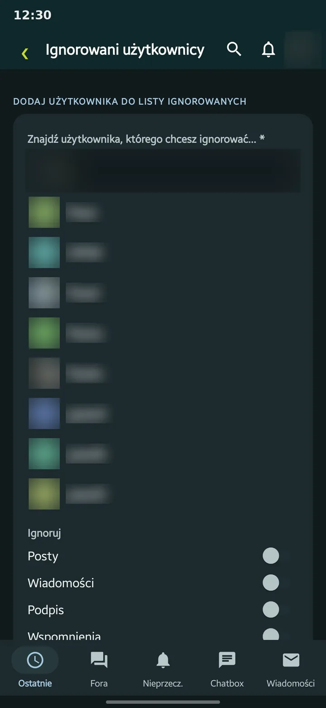
Emotki, bez śmieci we wpisach, ciemny motyw, Twój układEmoticons, no clutter in posts, a dark theme, your layout
- Emotki forum widać jako obrazki, a nie kody z dwukropkami w nawiasach kwadratowych, jak w Tapatalku.Forum emoticons show as pictures, not as colon codes in square brackets like in Tapatalk.
- Emoji z klawiatury Androida po prostu działają: aplikacja zamienia je na emotki forum. W przeglądarce wpis z emoji się nie wysyłał.Emoji from the Android keyboard just work: the app turns them into forum emoticons. In the browser a post with emoji did not go through.
- „Ukrywaj stopki” usuwa dopiski typu „Wysłane z mojego … przy użyciu Tapatalka”, także z cytatów."Ukrywaj stopki" removes notes like "Sent from my … using Tapatalk", in quotes too.
- Motyw jasny, ciemny albo systemowy.Light, dark or system theme.
- Kolejność i widoczność kart na dolnym pasku ustawiasz przeciągnięciem.Drag to set the order and visibility of the bottom bar tabs.
- Gwiazdka zapisuje temat w zakładce Zapisane.The star saves a topic in the Saved tab.
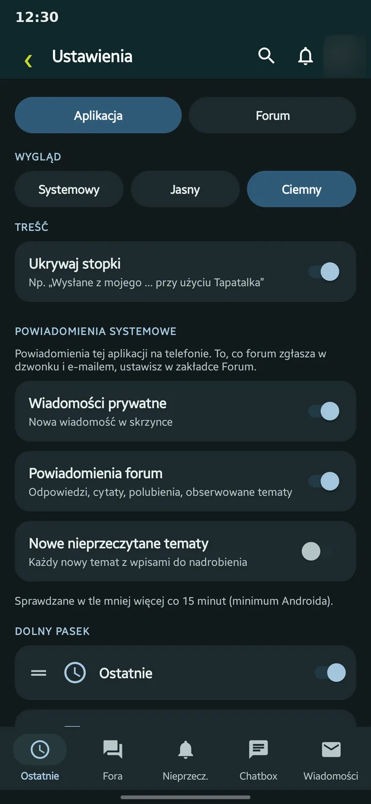
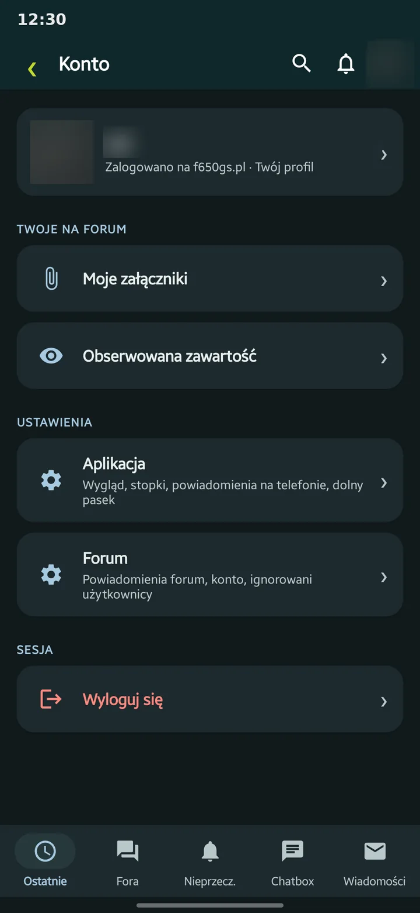
Uczciwie: plusy i minusyHonestly: pros and cons
PlusyPros
- Bez reklam, śledzenia i dodatkowych serwerów: aplikacja łączy się tylko z f650gs.pl (i ze Zdjęciami Google przy wysyłaniu zdjęć).No ads, tracking or extra servers: the app only talks to f650gs.pl (and Google Photos when sending photos).
- Emotki forum zamiast kodów, a emoji z klawiatury Androida działają (w przeglądarce wpis z emoji się nie wysyłał).Forum emoticons instead of codes, and Android keyboard emoji work (in the browser a post with emoji did not go through).
- Działa na zwykłym koncie forum, nawet gdy wtyczka Tapatalka padnie.Works on your normal forum account, even if the Tapatalk plugin breaks.
- Kod jest otwarty: każdy może sprawdzić, co robi.The code is open: anyone can check what it does.
MinusyCons
- Wysyłanie zdjęć wymaga konta Google i na razie działa tylko dla testerów: trzeba wysłać xelowi swój adres Gmail (jak dodać zdjęcia).Sending photos needs a Google account and for now works for testers only: send xel your Gmail address (how to add photos).
- Powiadomienia przychodzą co ok. 15 minut (minimum Androida), nie od razu.Notifications arrive about every 15 minutes (Android's minimum), not instantly.
- Forum działa przez nieszyfrowane HTTP: dotyczy to też przeglądarki i Tapatalka.The forum runs on unencrypted HTTP: this applies to the browser and Tapatalk too.
- Aktualizacje nie idą ze Sklepu Play: aplikacja sama raz dziennie sprawdza tę stronę i pyta „Instaluj / Anuluj”, a Android przy pierwszej aktualizacji prosi o zgodę na instalację z tej aplikacji.Updates do not come from the Play Store: once a day the app checks this page and asks "Instaluj / Anuluj", and on the first update Android asks you to allow installs from the app.